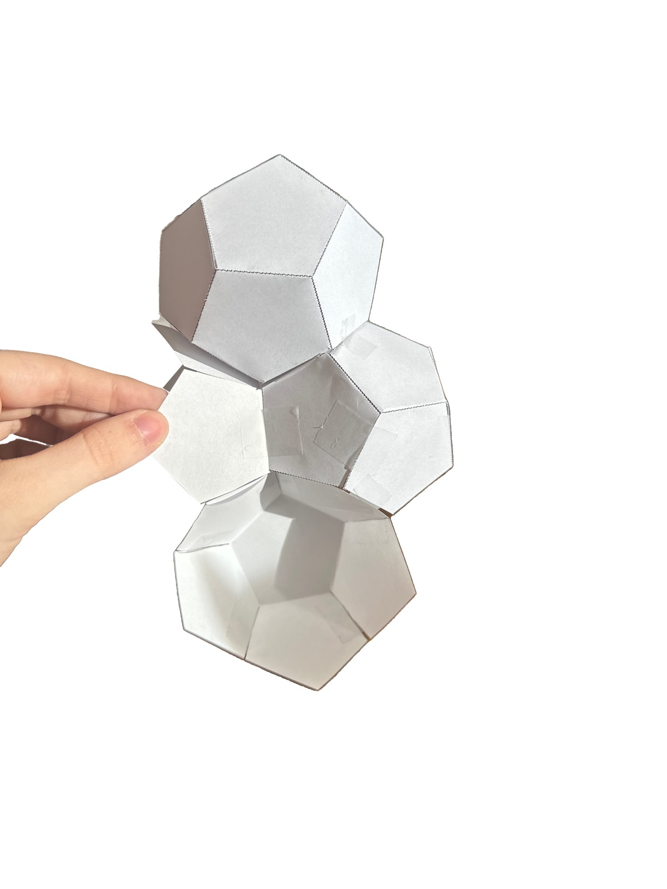
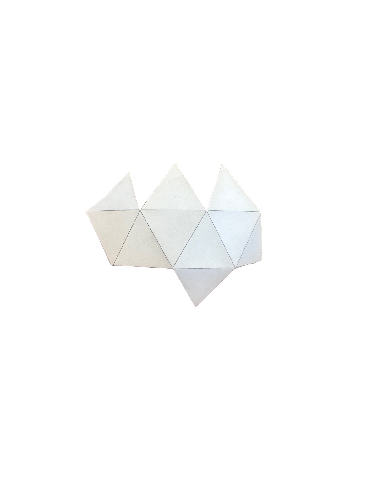
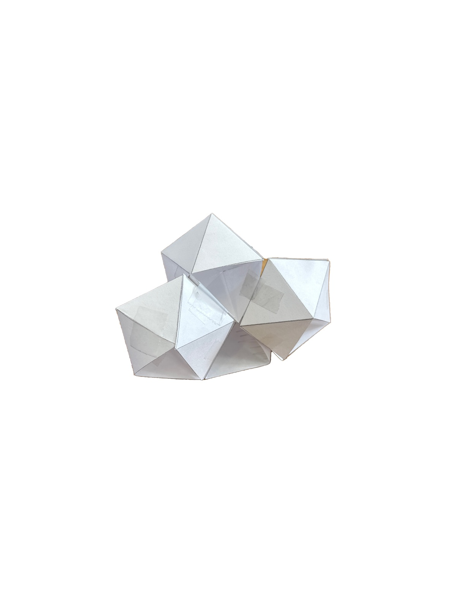
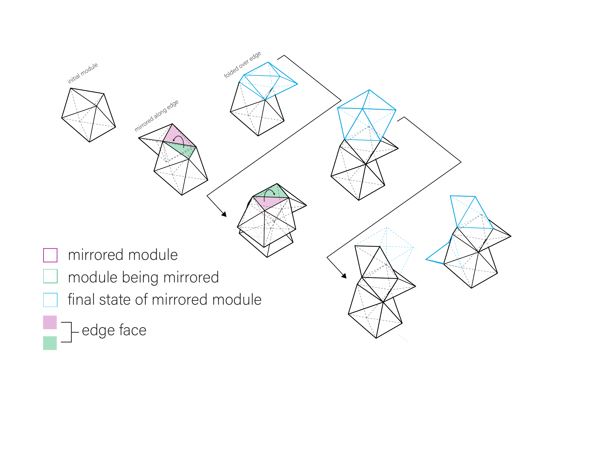
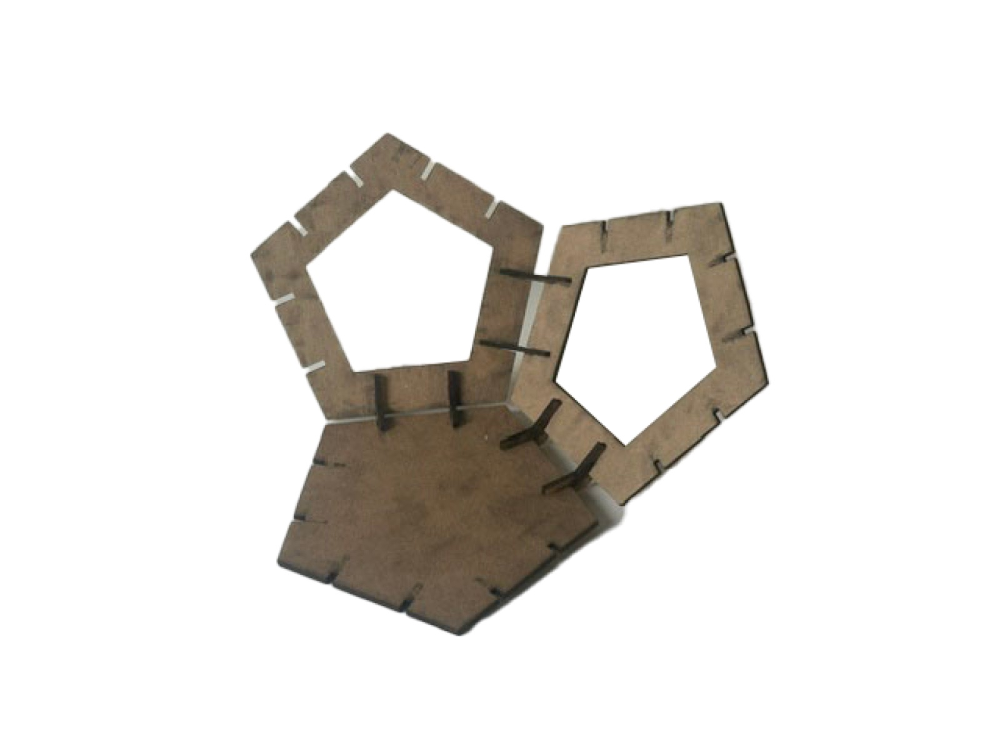
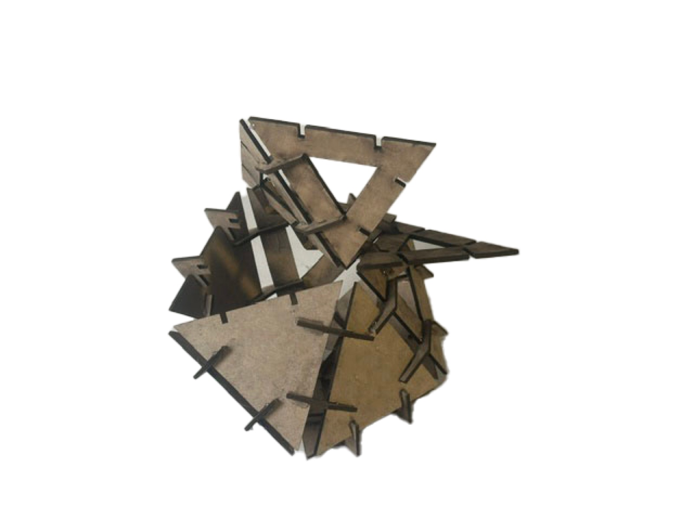
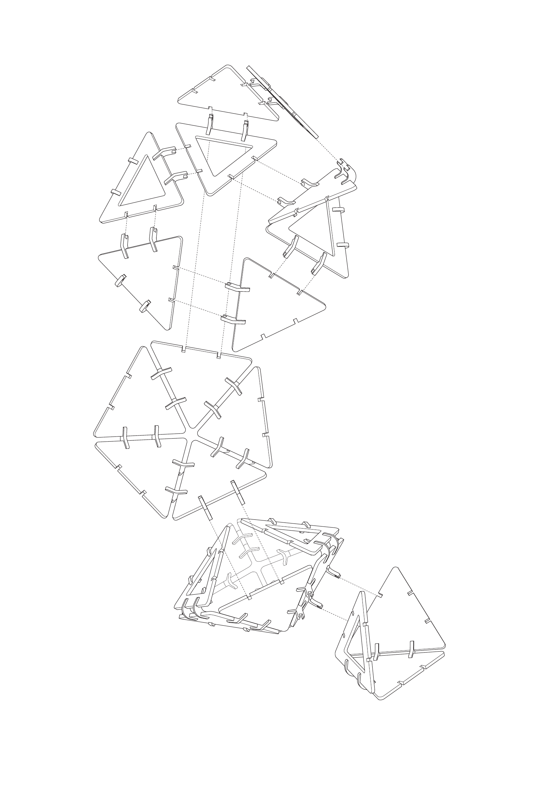

On campus, we set an unplanted plywood structure beside the lawn. From a distance, its triangular faces turned as one shape. Up close, the slots and connectors made its construction plain.
Pollen Farm began with a question: how could flat-cut pieces become a garden that grows in more than one direction? We built one full-scale configuration to test the geometry and assembly. The garden in the drawings remains a proposal.
What if the gap mattered as much as the solid?
We began with paper because a small form could be folded, held, and rearranged. The empty spaces between its faces were easier to notice in a hand than in a flat drawing.

A repeatable unit would need to keep making room, rather than closing into one fixed mass.

The net showed the faces as cuttable parts, before they occupied space.

Moving units together changed the outline and the gaps at the same time.
The form could change because the rule stayed clear.
Paper gave us a question about space. The drawings helped us choose a family of modules and describe the move that lets one become many.
Select a step to see what each drawing helped us understand.

On paper, two edges simply touch. Plywood asks how.
At full size, each meeting has a thickness and an angle. Five connector types translate the growth rule into pieces that can be cut and assembled. Select one to read its shape and job in the final diagram.
Choose a connector to inspect its row in the original drawing.
Small laser-cut trials let us check a seam on the table, then try that same joining logic across a cluster.

Would the cut slots and tabs hold adjacent faces together?

What changed when the same connection continued into another unit?
The drawing became a set of decisions about build order.
When the joints worked at small scale, we needed to understand how separate panels would become modules, then how those modules would meet.

- 01Cut the panels
Each triangular face starts as a flat plywood piece with openings and slots.
- 02Make a module
Connectors hold the faces at the angles the paper could only suggest.
- 03Join modules
Other connectors carry the rule from one volume into the next.
The diagram organized the parts. The full-size build would show whether those relationships still made sense at the scale of a person.
We built the structure. The garden still needs a living test.
The finished plywood form let us check the geometry, the joints, and its presence on campus. Planting remained an invitation in the drawings and composite scenes.
Switch views to see what we made and what we proposed.
Where would soil sit? How would water drain? Which plants belong here, and who would care for them through changing weather? Those questions need plants and time, not another rendering.
From a rule to a responsibility
I began by treating computational design as a way to generate form. By the end, I cared more about whether a rule could survive translation: from paper to drawing, from drawing to joint, from joint to plywood, and from plywood into a place people would pass.
We assembled one configuration, not the ecology promised by the name Pollen Farm. To become a garden, the project would need another kind of collaboration—with plants, water, weather, pollinators, and whoever keeps it alive.